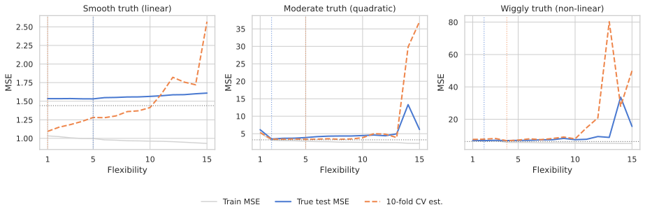

Where we are heading
Part 1 · 0:00–0:30
Why training error liesThe overfitting gap, validation sets, and their drawbacks.
Part 2 · 0:30–1:15
Cross-validationK-fold, LOOCV, the right vs wrong way.
Part 3 · 1:15–1:45
The BootstrapSE estimation, confidence intervals, and limits.
Cross-validation and the bootstrap are the two most important tools for assessing statistical learning methods. Everything downstream — model selection, hyperparameter tuning, uncertainty quantification — rests on these ideas.
Training error vs test error
- Test error: average error on new observations not used to train the model.
- Training error: error on the observations the model was fitted on — easy to calculate.
- Training error dramatically underestimates test error for flexible models.
- More flexibility → training error always falls, but test error forms a U-shape.

The bias-variance trade-off curve
As model complexity increases:
- Training error decreases monotonically.
- Test error decreases, then rises again.
- Minimum of test error = sweet spot.
- Left of minimum: high bias (underfitting).
- Right of minimum: high variance (overfitting).
How to estimate test error
- Best solution: a large designated test set — often not available.
- Mathematical adjustment: Cp, AIC, BIC — adjust training error upward by a penalty for model complexity.
- Resampling methods (our focus): hold out a subset of training data, fit on the rest, evaluate on the held-out portion.
- Resampling is model-agnostic — it works for any learning method, not just linear models.
The validation-set approach

- Randomly split n observations into a training set and a validation (hold-out) set.
- Fit the model on the training set only.
- Evaluate on the validation set: MSE for regression, misclassification rate for classification.
- The validation error estimates the test error.
Drawbacks of validation set
- High variance: the validation error depends heavily on which observations land in each half.
- 10 random splits of the same Auto data → 10 different MSE curves (see right).
- Overestimates test error: only half the data trains the model.
- The model fit on n/2 has more bias than the model deployed on all n.

K-fold cross-validation
- Randomly divide data into K equal-sized parts C1, C2, …, CK.
- Leave out part k. Fit on the other K−1 parts combined. Predict on part k. Compute MSEk.
- Repeat for each k = 1, 2, …, K. Combine the K estimates.
- CV(K) = Σ (nk/n) · MSEk
- Estimates can also be used to select the best model (degree, hyperparameter, etc.).
5-fold CV — the diagram
| Fold | Part 1 | Part 2 | Part 3 | Part 4 | Part 5 |
|---|---|---|---|---|---|
| 1 | Valid. | Train | Train | Train | Train |
| 2 | Train | Valid. | Train | Train | Train |
| 3 | Train | Train | Valid. | Train | Train |
| 4 | Train | Train | Train | Valid. | Train |
| 5 | Train | Train | Train | Train | Valid. |
Each row is one fit. Each red cell contributes its MSE to CV(5). Every observation is held out exactly once.
The CV formula in detail
CV(K) = Σk=1K (nk/n) · MSEk
MSEk = Σi ∈ Ck (yi − ŷi)2 / nk
- nk = n/K when n is a multiple of K.
- ŷi is the prediction for obs i from the model trained without part k.
- Setting K = n gives Leave-One-Out CV (LOOCV).
LOOCV — a nice shortcut
For least-squares linear or polynomial regression:
CV(n) = (1/n) Σi=1n [(yi − ŷi) / (1 − hi)]2
- ŷi = fitted value from a single full-data OLS fit.
- hi = leverage of observation i — diagonal of the hat matrix H = X(XTX)−1XT.
- One model fit computes LOOCV for free. No K refits needed.
- Observations with high leverage hi get their residual inflated more.
LOOCV vs K = 5 or 10
- LOOCV is nearly unbiased — trains on n−1 observations.
- But LOOCV has high variance: K=n estimates are highly correlated.
- K = 5 or K = 10 provides a better bias-variance trade-off.
- Each fold uses (K−1)/K of the data → some upward bias, controlled variance.
- Practical rule of thumb: use K = 10.

Auto data: LOOCV vs 10-fold CV
Left: LOOCV — single smooth curve, no randomness, minimum at degree 2. Right: 10-fold CV (10 runs) — slight variation across seeds, but minimum is consistently at degree 2.
True vs estimated test MSE

Grey = training MSE. Blue = true test MSE. Orange dashed = 10-fold CV estimate. CV reliably finds the same minimum as the true test curve even when the absolute values differ.
Bias in K-fold CV
- Each fold trains on only (K−1)/K of the full data.
- Smaller training set → model is slightly worse → upward bias in error estimate.
- K = n (LOOCV) minimises this bias — trains on n−1 points, nearly the full dataset.
- But LOOCV has the highest variance (correlated fold estimates).
- K = 5 or 10 balances bias and variance. The standard choice.
CV for classification
Replace MSE with misclassification rate:
CVK = Σk (nk/n) Errk, Errk = Σi ∈ Ck I(yi ≠ ŷi) / nk
Estimated SE of CVK:
SĒ(CVK) = √[ (1/K) Σk (Errk − Err̄k)2 / (K−1) ]
This SE estimate is useful but not strictly valid — the K fold errors are correlated (they share training data), violating the independence assumption of the SE formula.
CV: the right and the wrong way
Wrong:
- Step 1: find top-100 predictors by correlation with labels (using ALL data).
- Step 2: apply CV to logistic regression on those 100 predictors.
- → CV error ≈ 0%, but true error = 50%.
Right:
- CV folds wrap ALL steps.
- Inside each fold: select predictors from training fold only, then fit classifier.
- → CV error correctly reflects true performance.
Why the wrong way is wrong
- Step 1 (feature selection) has already seen the labels.
- The selected features are chosen to correlate with labels in this specific sample — noise that happens to look like signal.
- The classifier in step 2 is guaranteed to look good on these features even if they are purely random.
- The rule: everything that touches labels must be inside the CV loop.
- In scikit-learn: use
Pipeline— it enforces this automatically.
sklearn Pipeline enforces the right way
from sklearn.pipeline import Pipeline
from sklearn.feature_selection import SelectKBest, f_classif
from sklearn.linear_model import LogisticRegression
from sklearn.model_selection import cross_val_score
# RIGHT: selection is inside the pipeline, inside each fold
pipe = Pipeline([
('select', SelectKBest(f_classif, k=100)),
('clf', LogisticRegression()),
])
cv_error = 1 - cross_val_score(pipe, X, y, cv=5).mean()
# cv_error ≈ 0.50 for random labels — honestWhat is the bootstrap?
- A flexible tool to quantify uncertainty of any estimator or statistical learning method.
- Provides estimates of standard error and confidence intervals without needing a new study.
- Name from Baron Munchausen: "pulled himself up by his own bootstraps".
- Key idea: treat the observed sample as a stand-in for the population; repeatedly resample from it.
The investment example
Invest a fraction α in asset X and 1−α in asset Y. Minimise Var(αX + (1−α)Y).
α* = (σY2 − σXY) / (σX2 + σY2 − 2σXY)
- σX2 = Var(X), σY2 = Var(Y), σXY = Cov(X,Y) are unknown.
- Estimate them from a sample → get α̂.
- Problem: how accurate is α̂? What is SE(α̂)?
Simulating from the true population
- If we could repeatedly draw samples of n=100 from the true population, we could estimate SE(α̂) directly.
- Draw 1000 datasets → compute α̂ for each → histogram of α̂1, …, α̂1000.
- Mean ≈ 0.5996 (very close to true α = 0.6).
- SD ≈ 0.083 → SE(α̂) ≈ 0.083.
- This is the gold standard — but requires knowing the population.
Bootstrap: resample from your one dataset
- We cannot generate new data from the population.
- Instead: treat the observed sample Z = (z1,…,zn) as the estimated population P̂.
- Draw bootstrap datasets Z*1, Z*2, …, Z*B by sampling n observations with replacement from Z.
- Some observations appear multiple times; some not at all.
- Compute α̂*1, …, α̂*B on each bootstrap dataset.
Bootstrap standard error
Estimate SE using the bootstrap estimates:
SEB(α̂) = √[ 1/(B−1) Σr=1B (α̂*r − ā*)2 ]
- Investment example: SEB(α̂) ≈ 0.087, true SE = 0.083.
- B = 1000 resamples is typically enough.
- Works for any estimator — OLS, medians, ML models.

Bootstrap percentile confidence interval
- Sort the B bootstrap estimates α̂*1, …, α̂*B.
- The 5th and 95th percentiles form an approximate 90% CI.
- For the investment example: 90% CI ≈ (0.43, 0.72). True α = 0.6 is well inside.
- This is the Bootstrap Percentile interval — the simplest CI from the bootstrap.
- More sophisticated variants (BCa, studentised bootstrap) correct for skew and bias.
Bootstrap is NOT suitable for prediction error
- Attempt: use Z*b as training set, original Z as validation.
- Problem: ~2/3 of obs appear in each bootstrap sample.
- Model has already 'seen' ~63% of the validation set.
- Result: bootstrap severely underestimates test error.
- Use CV for prediction error. Use bootstrap for SE and CI.

Bootstrap for regression coefficients
import numpy as np
rng = np.random.default_rng(0)
# One bootstrap iteration
n = len(y)
idx = rng.choice(n, size=n, replace=True)
X_boot, y_boot = X[idx], y[idx]
coef_boot = np.linalg.lstsq(X_boot, y_boot, rcond=None)[0]
# Repeat B times, collect SE
coefs = [fit_once(rng) for _ in range(1000)]
se_boot = np.std(coefs, axis=0) # compare to statsmodels .bsescipy.stats.bootstrap — the modern API
from scipy.stats import bootstrap
# Bootstrap CI for the median of a 1-D sample
result = bootstrap(
(sample,), # data as tuple of arrays
statistic=np.median,
n_resamples=1000,
confidence_level=0.95,
random_state=0,
)
print(result.confidence_interval) # ConfidenceInterval(low=..., high=...)Bootstrap vs permutation tests
Bootstrap
- Samples from the estimated population P̂.
- Estimates SE and CI for any estimator.
- Answers: how variable is my estimate?
Permutation test
- Samples from the null distribution (shuffle labels).
- Estimates p-values and False Discovery Rates.
- Answers: is there any effect at all?